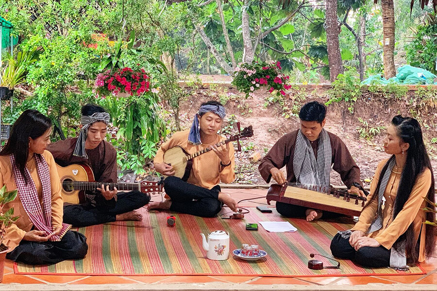
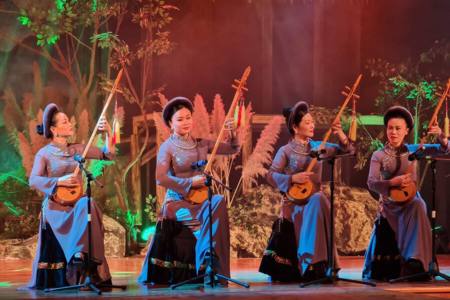
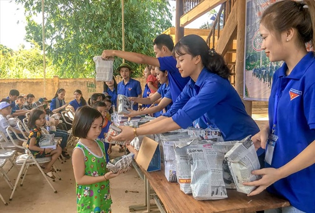
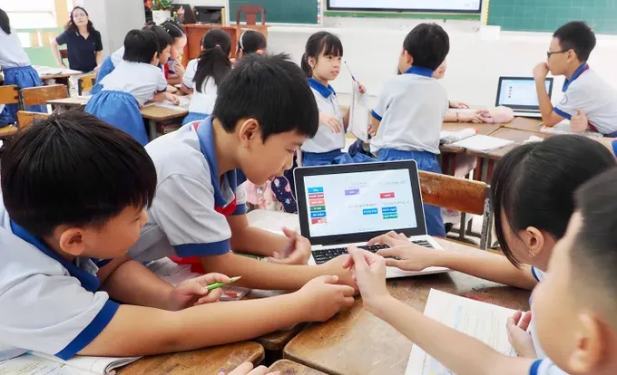
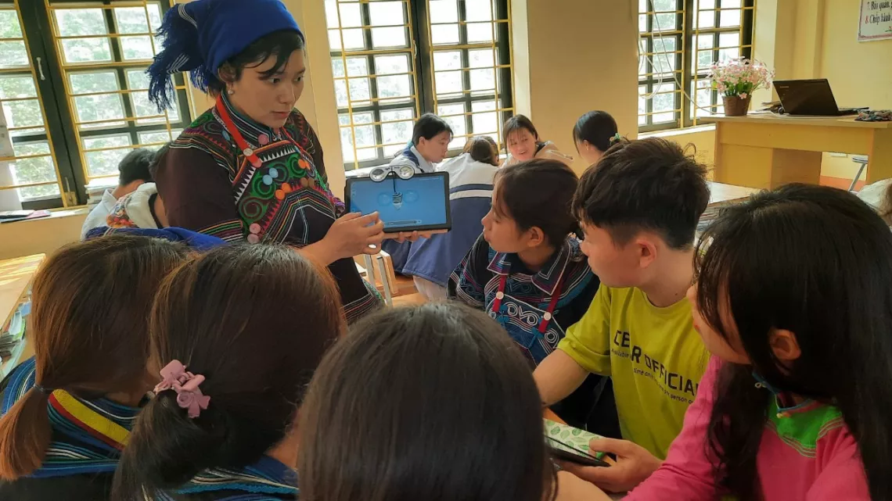
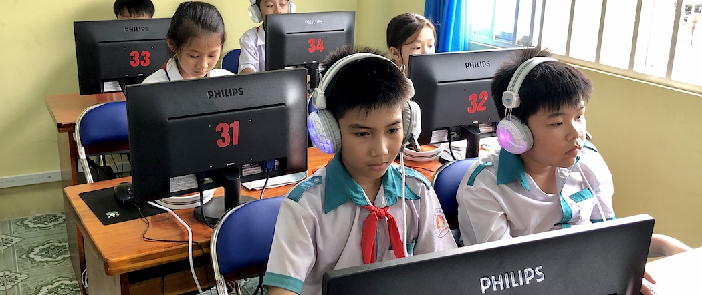

Welcome
Welcome to my team's English project website.
This website presents three different topics that are meaningful and useful.
Please use the menu to explore each project in detail.😎😎
Traditional Music
Introduction

Traditional music is an important part of every country's culture.
It has been passed down from generation to generation and reflects the lifestyle, beliefs, and emotions of people in the past.
Every region often has its own instruments, songs, and singing styles.
History and Instruments

Many traditional instruments are handmade and have been used for hundreds of years, such as flutes, drums, string instruments, and xylophones.
Each instrument has a unique sound, and songs often tell stories about daily life, nature, historical events, or legends.
Traditional music festivals are common and help preserve this cultural heritage.
Current Situation

Today, traditional music faces competition from modern music and digital entertainment.
However, many young people are starting to learn traditional instruments and perform at schools or cultural events.
There are programs to teach music in villages and cities, helping to keep the tradition alive.
Benefits
Learning traditional music improves creativity, concentration, and appreciation of cultural history.
Performing or listening to it can also relieve stress and connect communities through shared experiences.
A Volunteer Project
Introduction

Volunteer projects are activities where people freely give their time and skills to help others.
These projects can focus on education, environmental protection, health care, or community development.
They are often organized by schools, community centers, or social organizations.
Types of Volunteer Work

Volunteers may help clean parks, plant trees, visit orphanages, teach underprivileged children, or support elderly people.
Each type of work has its own challenges and rewards.
For example, teaching children requires patience, while cleaning a park helps improve the environment.
Current Situation

Many students join volunteer projects to gain experience and contribute to society.
Social media also helps volunteers organize events and recruit participants.
Despite busy school schedules, more and more young people are willing to participate in meaningful volunteer activities.
Benefits
Volunteering develops responsibility, empathy, and teamwork.
It also strengthens social connections and improves communication skills.
Additionally, it makes communities more friendly, safe, and supportive.
Invention for the Classroom
Introduction

Classroom inventions are tools or devices designed to make teaching and learning easier and more effective.
They can be physical devices, software applications, or digital platforms.
The main goal is to make lessons more interactive, engaging, and understandable.
Examples

Examples of classroom inventions include smart boards, tablets, educational apps, online quizzes, and interactive whiteboards.
These tools allow teachers to explain complex subjects clearly and help students learn at their own pace.
Some inventions, like interactive simulations, let students experience concepts in a practical way.
Current Situation

Many schools now integrate technology in everyday lessons.
However, not all students have access to advanced devices, and teachers need training to use them effectively.
Governments and organizations are working to provide resources so that all students can benefit from educational inventions.
Benefits
Classroom inventions make learning more engaging, improve students' understanding, and encourage creativity.
They also help teachers save time and track student progress more efficiently.
Ultimately, these inventions can enhance the overall quality of education and prepare students for the future.